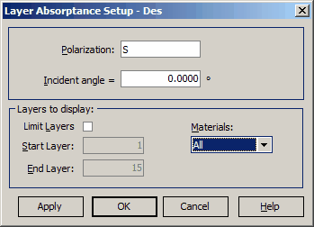
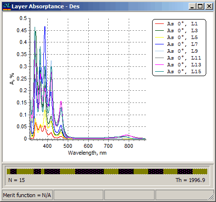
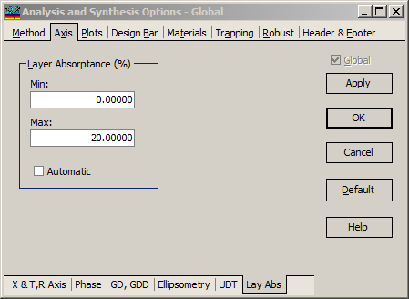

Layer Absorptance
Layer Absorptance
Navigation: OptiLayer Menu Commands > Analysis Menu >
Layer Absorptance
` <idh_ellipsometry_evaluation.html>`__ ` <idh_menu_analysis.html>`__ ` <taper_wavefront_evaluation.html>`__
The Layer Absorptance option allows you to show the level of absorptance in individual layers of the design based on either wavelength (Spectral mode) or angle of incidence (Angular mode).

The Layer Absorptance Setup dialog allows you to choose the polarization state and incident angle (or wavelength value in Angular mode) for this analysis. You can also limit the display to a specific range of layers (Start Layer and End Layer entries) and to only one of the available set of materials.

To adjust the X-axis limits, you can use the Options dialog or the Axis command in the right-click menu. The Y-axis in the Layer Absorptance dialog has automatic maximum scaling. To change the Y-axis limits and scaling, double-click on the axis or invoke the Chart Designer dialog.
To set Y-axis limits, use the Analysis and Synthesis options dialog. This will allow you to customize the Y-axis according to your preferences.
